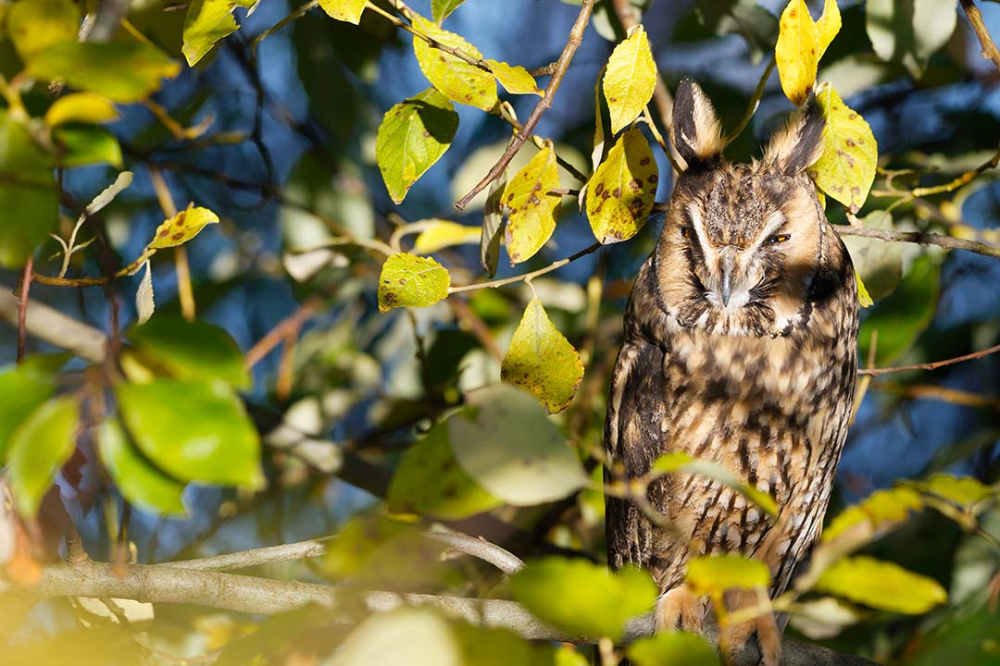
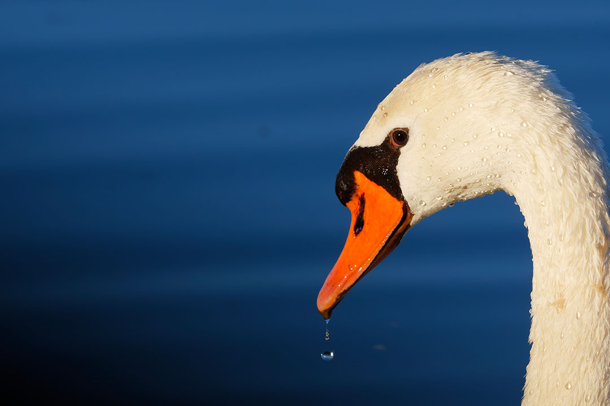

Hello and welcome to our page ! We are two belgian photographers passionnates about birds and wildlife photography for a few years. Don't hesitate to take a look to our gallery!
Latest photos
Our latest photographs
Updated : 29 june 2022
Gallery
Anchor Raptors
Red kite
Diurnal raptor, fan of gliding flight. It usually nests in forests on the edge of pastures where it can hunt easily. In flight, it is distinguished from the common buzzard by its kite-shaped tail.
Belgian Ardennes, ISO-2000, f/10, 150mm, 1/1250s
Red kite
Diurnal raptor, fan of gliding flight. It usually nests in forests on the edge of pastures where it can hunt easily. In flight, it is distinguished from the common buzzard by its kite-shaped tail.
Belgian Ardennes, ISO-1600, f/10, 370mm, 1/1250s
Marsh owl
Owl with little visible egrets. It is mainly present in southern Africa, under the southern hemisphere but some populations nest in northwestern Morocco.
One of the most common raptors in Belgium. If you pay attention to it, it is common to see them placed along the highways. Despite its imposing size, it is a very shy bird.
Belgian Ardennes, ISO-1000, f/8, 600mm, 1/1200s
Grey owl
Nocturnal raptor, it presents an extreme adaptation of hearing to night hunting thanks to its facial mask. The latter directs the sounds to his ears in order to precisely locate his prey.
Marais d'Harchies, ISO-12800, f/6,3, 600mm, 1/30s

Grey owl
Nocturnal raptor, it presents an extreme adaptation of hearing to night hunting thanks to its facial mask. The latter directs the sounds to his ears in order to precisely locate his prey.
Liege region, ISO-100, f/10, 390mm, 1/80s
Anchor Common birds
Common jay
Colorful bird, yet it is a corvid like the magpies and crows. Very fearful, it lives mainly in parks or in the forest although they sometimes feed in garden feeders.
Belgian Ardennes, ISO-160, f/6,3, 460mm, 1/160s
Common cuckoo
During breeding, the cuckoo lays an egg in the nest of another bird species. The latter does not realize anything and will feed the interloper, precocious and greedy, instead of his own offspring.
Marais d'Harchies, ISO-200, f/8, 600mm, 1/320s
Nothern gannet
A large seabird, its hunting technique is spectacular. It spots schools of fish in flight and dives its head first, sometimes more than 30 meters high.
Small, very colorful bird, living and hunting in ponds and streams with low current. During the mating period, the male offers fish to the female to prove that he is able to support a brood.
Namur region, ISO-3200, f/6, 390mm, 1/100s
Great spotted woodpecker
The most common woodpecker. During the summer, its long beak allows it to catch insect larvae in the crevices of tree trunks but also ants in anthills.
Mons region, ISO-6400, f/6,3, 600mm, 1/1000s

Swan
Contrary to popular belief, swans do not form a couple for life. The male can have up to 4 females. When he feels in danger, they utter a particular aggressive cry, resembling a snake whistle.
Marais d'Harchies, ISO-250, f/11, 440mm, 1/500s
Anchor Mammals
Squirrel
A forest rodent, it is the only native squirrel present in Western Europe. When he wears his winter coat, his ears have a visible and characteristic brush of hair.
Belgian Ardennes, ISO-6400, f/6,3, 340mm, 1/200s
Doe
Very present in our forests, it is however difficult to observe. Professional to hide in tall grass, his hearing and smell are highly developed, which allows him to spot humans from afar.